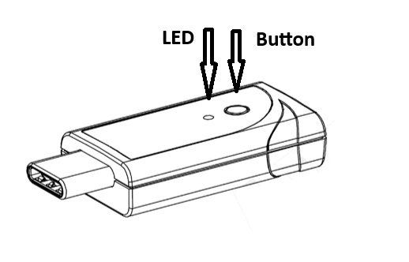

MDBT50Q-CX-40 Dongle
Overview
The Raytac MDBT50Q-CX-40 Dongle hardware provides support for the Nordic Semiconductor nRF52840 ARM Cortex-M4F CPU and the following devices:
Nordic nRF52840 SoC Solution Dongle
A recommended 3rd-party module by Nordic Semiconductor.
BT5.4 & BT5.2 & BT5.1 & BT5 Bluetooth Specification Certified.
Type C USB
Supports Open Bootloader
Supports BT5 Long Range Feature
Deployed Raytac MDBT50Q-P1M Module
Certifications: FCC, IC, CE, UKCA, Telec (MIC), KC, SRRC, NCC, RCM, WPC
32-bit ARM® Cortex® M4F CPU
1MB Flash Memory / 256kB RAM
RoHS & Reach Compliant.
Dimension：26.2 x 15.1 x 6.8 mm (excluding Type C USB Connector)
Highly flexible multiprotocol SoC ideally suited for Bluetooth® Low Energy, ANT+, Zigbee, Thread (802.15.4) ultra low-power wireless applications.
Hardware
The raytac_mdbt50q_cx_40_dongle/nrf52840 board target has two external oscillators. The frequency of
the slow clock is 32.768 kHz. The frequency of the main clock is 32 MHz.
Supported Features
The raytac_mdbt50q_cx_40_dongle board supports the hardware features listed below.
- on-chip / on-board
- Feature integrated in the SoC / present on the board.
- 2 / 2
-
Number of instances that are enabled / disabled.
Click on the label to see the first instance of this feature in the board/SoC DTS files. -
vnd,foo -
Compatible string for the Devicetree binding matching the feature.
Click on the link to view the binding documentation.
Connections and IOs
LED
LED0 ( blue ) = P0.8
LED1 ( blue ) = P0.6 (No pasted components by default)
Programming and Debugging
The raytac_mdbt50q_cx_40_dongle board supports the runners and associated west commands listed below.
| flash | debug |
|---|
Applications for the raytac_mdbt50q_cx_40_dongle/nrf52840 board target can be
built in the usual way (see Building an Application for more details).
Flashing
The board supports the following programming options:
Using the built-in bootloader only
Using MCUboot in serial recovery mode
Using an external debug probe
These instructions use the west tool and assume you are in the root directory of your west installation.
Option 1: Using the Built-In Bootloader Only
The board is factory-programmed with Open bootloader from Nordic’s nRF5
SDK. With this option, you’ll use Nordic’s nrfutil [2] program to create
firmware packages supported by this bootloader and flash them to the
device. Make sure nrfutil is installed before proceeding.
Hold the button and plug it into the USB socket in the bootloader.
The push button is on the far side of the board from the USB connector. Note that the button does not face up. You will have to push it from the outside in, towards the USB connector:

The red LED should start a fade pattern, signalling the bootloader is running.
Compile a Zephyr application; we’ll use Blinky.
west build -b raytac_mdbt50q_cx_40_dongle/nrf52840 zephyr/samples/basic/blinky
Package the application for the bootloader using
nrfutil:nrfutil nrf5sdk-tools pkg generate \ --hw-version 52 \ --sd-req=0x00 \ --application build/zephyr/zephyr.hex \ --application-version 1 \ blinky.zip
Flash it onto the board. Note
/dev/ttyACM0is for Linux; it will be something likeCOMxon Windows, and something else on macOS.nrfutil nrf5sdk-tools dfu usb-serial -pkg blinky.zip -p /dev/ttyACM0When this command exits, observe the green LED on the board blinking, instead of the red LED used by the bootloader.
For more information, see Nordic Semiconductor USB DFU [1].
Option 2: Using MCUboot in Serial Recovery Mode
It is also possible to use the MCUboot bootloader with this board to flash Zephyr applications. You need to do some one-time set-up to build and flash MCUboot on your board. From that point on, you can build and flash other Zephyr applications using MCUboot’s serial recovery mode. This process does not overwrite the built-in Nordic bootloader, so you can always go back to using Option 1 later.
Install nrfutil [2] and mcumgr [4] first, and make sure MCUboot’s imgtool is
available for signing your binary for MCUboot as described on Signing Binaries.
Next, do the one-time setup to flash MCUboot. We’ll assume you’ve cloned
the MCUboot [3] repository into the directory mcuboot, and that it is next
to the zephyr repository on your computer.
Reset the board into the Nordic bootloader as described above.
Compile MCUboot as a Zephyr application.
west build -b raytac_mdbt50q_cx_40_dongle/nrf52840 -d build/mcuboot mcuboot/boot/zephyr
Package the application for the bootloader using
nrfutil:nrfutil nrf5sdk-tools pkg generate \ --hw-version 52 \ --sd-req=0x00 \ --application build/mcuboot/zephyr/zephyr.hex \ --application-version 1 \ mcuboot.zip
Flash it onto the board. Note
/dev/ttyACM0is for Linux; it will be something likeCOMxon Windows, and something else on macOS.nrfutil nrf5sdk-tools dfu usb-serial -pkg mcuboot.zip -p /dev/ttyACM0
You can now flash a Zephyr application to the board using MCUboot’s serial recovery mode. We’ll use the SMP server sample since it’s ready to be compiled for chain-loading by MCUboot (and itself supports firmware updates over Bluetooth).
Boot into MCUboot serial recovery mode by plugging the board in with the SW1 button pressed down. See above for a picture showing where SW1 is.
A serial port will enumerate on your board. On Windows, “MCUBOOT” should appear under “Other Devices” in the Device Manager (in addition to the usual
COMxdevice). On Linux, something like/dev/serial/by-id/usb-ZEPHYR_MCUBOOT_0.01-if00should be created.If no serial port appears, try plugging it in again, making sure SW1 is pressed. If it still doesn’t appear, retry the one-time MCUboot setup.
Compile
smp_svr.west build -b raytac_mdbt50q_cx_40_dongle/nrf52840 -d build/smp_svr zephyr/samples/subsys/mgmt/mcumgr/smp_svr
Sign
smp_svrfor chain-loading by MCUboot.west sign -t imgtool --bin --no-hex -d build/smp_svr \ -B smp_svr.signed.bin -- --key mcuboot/root-rsa-2048.pem
Flash the application to the MCUboot serial port using
mcumgr:mcumgr --conntype=serial --connstring='dev=/dev/ttyACM0,baud=115200' \ image upload -e smp_svr.signed.bin
Reset the device:
mcumgr --conntype=serial --connstring='dev=/dev/ttyACM0,baud=115200' reset
You should now be able to scan for Bluetooth devices using a smartphone or
computer. The device you just flashed will be listed with Zephyr in its
name.
Note
This board supports building other Zephyr applications for flashing with
MCUboot in this way also. Just make sure CONFIG_BOOTLOADER_MCUBOOT
is set when building your application. For example, to compile blinky for
loading by MCUboot, use this:
west build -b raytac_mdbt50q_cx_40_dongle/nrf52840 -d build/blinky zephyr/samples/basic/blinky -- -DCONFIG_BOOTLOADER_MCUBOOT=y
You can then sign and flash it using the steps above.
Option 3: Using an External Debug Probe
If you have one, you can also use an external debug probe to flash and debug Zephyr applications, but you need to solder an SWD header onto the back side of the board.
For Segger J-Link debug probes, follow the instructions in the Nordic nRF5x Segger J-Link page to install and configure all the necessary software. Further information can be found in Flashing.
Locate the DTS file: :boards/raytac/raytac_mdbt50q_cx_40_dongle_nrf52840.dts.
This file requires a small modification to use a different partition table.
Edit the include directive to include “fstab-debugger” instead of “fstab-stock”.
In addition, the Kconfig file in the same directory must be modified by setting
BOARD_HAS_NRF5_BOOTLOADER to be default n, otherwise the code will be
flashed with an offset.
Then build and flash applications as usual (see Building an Application and Run an Application for more details).
Here is an example for the Blinky application.
# From the root of the zephyr repository
west build -b raytac_mdbt50q_cx_40_dongle/nrf52840 samples/basic/blinky
west flash
Observe the LED on the board blinking.
Debugging
The raytac_mdbt50q_cx_40_dongle/nrf52840 board does not have an on-board J-Link debug IC
as some nRF5x development boards, however, instructions from the
Nordic nRF5x Segger J-Link page also apply to this board, with the additional step
of connecting an external debugger.